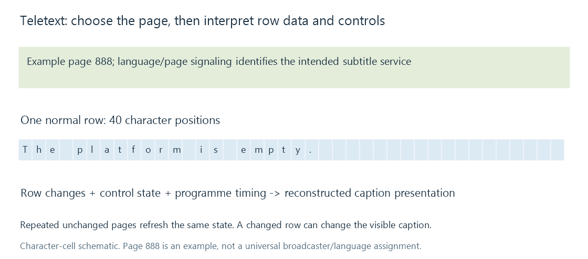

Teletext subtitles
Teletext subtitles select a caption page whose character/control data, row updates and broadcast signaling establish the timed display.
Teletext can carry subtitle pages as part of a broadcast data service. The consumer selects the signaled subtitle page and reconstructs its character/control presentation.
The familiar page number, such as 888, identifies a page in that system. It is not a subtitle cue number, a timestamp or a promise that every broadcaster uses the same page for the same language.
A page has identity and character-cell layout
The basic Teletext page model uses character positions; its normal row spans 40 columns. Page/header information and applicable subtitle signaling identify the intended service.

Characters are interpreted through the applicable character sets and presentation state. Controls can affect colour, size, concealment and other behavior. A raw row is consequently not just an arbitrary UTF-8 sentence.
An extractor needs to distinguish printable content from those controls and convert the character repertoire appropriately. A national-character option or enhancement changes interpretation without changing the page's apparent language label.
Pages are updated, not streamed as SRT blocks
Consider an invented sequence of subtitle-page states:
| Programme position | Selected-page result |
|---|---|
| 12.5 s | A row displays “The platform is empty.” |
| 14.0 s | Another row adds “[train approaching]” |
| 15.0 s | The relevant page content is cleared/replaced |
Repeated transmission can refresh an unchanged page. Counting every repeated packet as a new caption would create duplicates. Discarding a changed row because its page number repeats would lose content.
A text conversion therefore resolves the selected page and its updates, then derives suitable visible intervals and line ordering.
Teletext and graphical DVB subtitles are different
A MPEG transport stream can carry Teletext data or a graphical DVB subtitle service under their applicable signaling. The shared broadcast container does not give both the same page/region/object model.
A Teletext decoder commonly interprets character/control data. DVB graphical subtitles normally assemble palette-coded objects and regions. Their extraction and rendering stages are related tasks with different input structures.
For an Emby recording, check the selected page/service, language signaling and actual decoded output. Correct reception of the video stream does not establish that the intended Teletext page was recovered.
See Also
- Closed-caption services
- DVB subtitles (DVBSub)
- MPEG Transport Stream: TS and M2TS
- Subtitle character encoding